Usage interne COFINA
Manuel d’utilisation
Controlis360 — Cartographie des risques & Suivi des recommandations
Compagnie Financière Africaine
Sommaire
Introduction Connexion et session Portail et modules Profils et droits Module Cartographie des risques Module Suivi des reco Workflows détaillés (pas à pas) Glossaire et annexes
1. Introduction
Controlis360 centralise la gouvernance des risques et du contrôle pour COFINA.
Module Objectif
Cartographie des risques Identifier, évaluer et piloter les risques opérationnels Suivi des reco Planifier les missions et suivre les recommandations
Organisation : Environnement (filiale) → Entité (Département / Agence) → Utilisateurs.
Chaque utilisateur est limité aux environnements et entités qui lui sont attribués.
2. Connexion et session
2.1 Se connecter
Ouvrir l’adresse de l’application.
Saisir e-mail et mot de passe.
Cliquer sur Se connecter .
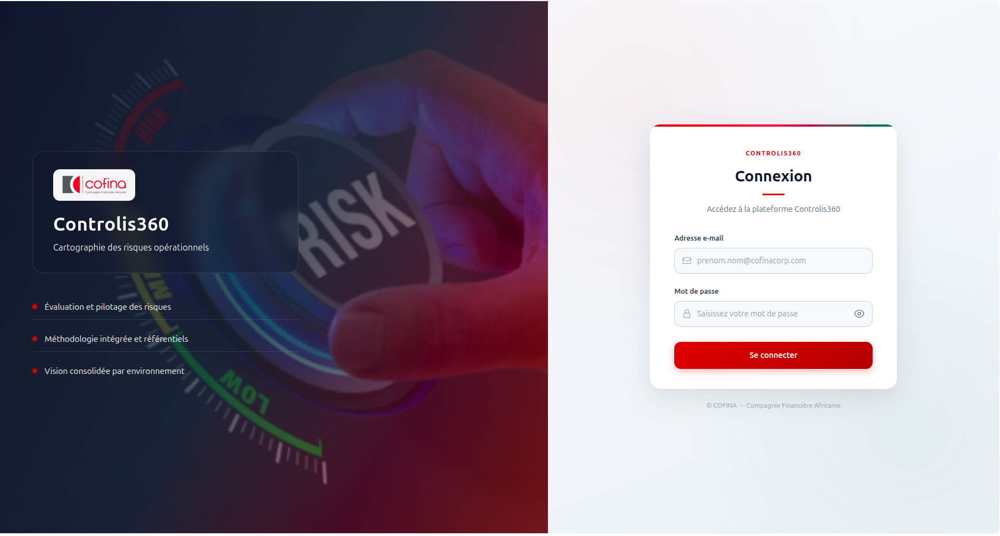
Figure 1 — Écran de connexion Controlis360
2.2 Premier changement de mot de passe
Si le compte l’exige : mot de passe actuel, nouveau (≥ 8 caractères), confirmation → Enregistrer et continuer .
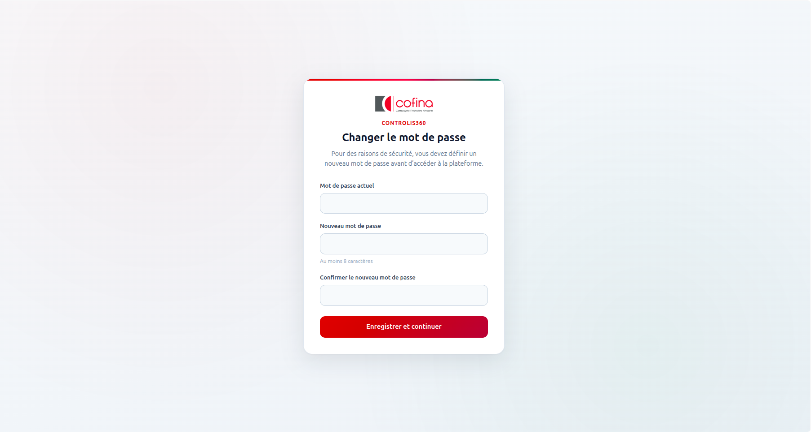
Figure 2 — Changement de mot de passe obligatoire
2.3 Déconnexion
Bouton Déconnexion en bas de la barre latérale. Session fermée automatiquement après environ 2 heures d’inactivité.
3. Portail et modules
Après connexion : Sélectionnez un module pour continuer .
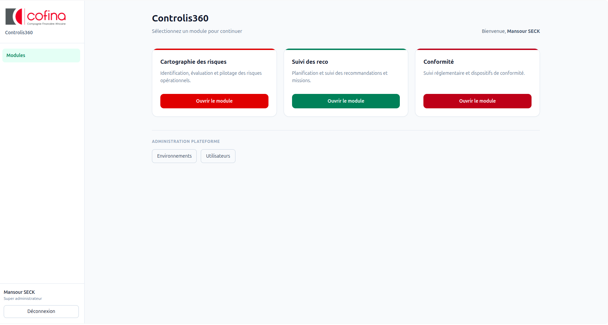
Figure 3 — Portail Controlis360
4. Profils et droits
Profil Rôle principal
Administrateur Gestion du périmètre rattaché Contrôle / Audit Missions et recommandations selon type Métier Réponses aux reco / phase 2 risques Régulateur File des recommandations transmises
Sous-rôles fréquents : Agent contrôle , Responsable contrôle , Responsable entité , Agent métier .
5. Module Cartographie des risques
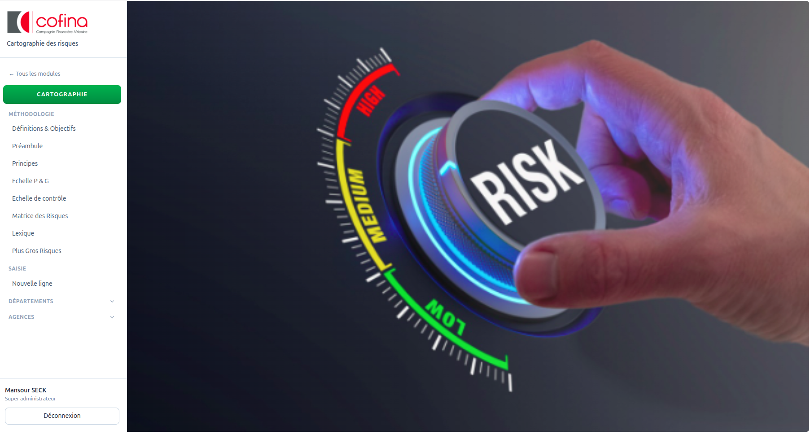
Figure 4 — Menu Cartographie
5.2 Cartographie consolidée
Écran CARTOGRAPHIE DES RISQUES — vue consolidée des filiales.
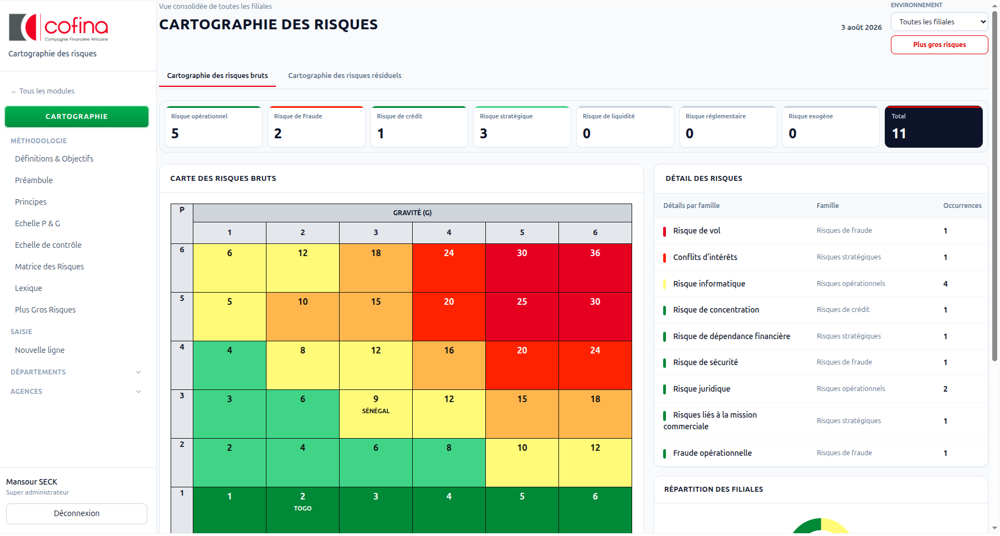
Figure 5 — Vue consolidée : cartographie des risques
Filtre environnement / filiale en haut à droite.
Onglets risques bruts et risques résiduels .
Cartes de synthèse par famille de risque + total.
Heatmap P (probabilité) × G (gravité), du vert (faible) au rouge (élevé).Panneau Détail des risques à droite.
Bouton Plus gros risques (fort impact, Rb ≥ 20 en général).
5.3 Méthodologie
Menu Méthodologie : Définitions, Préambule, Principes, Échelles, Matrice, Lexique, Plus Gros Risques.
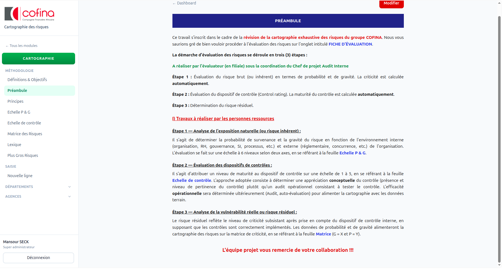
Figure 6 — Référentiel méthodologique (ex. Préambule)
Ces pages expliquent comment évaluer les risques.
Le Préambule rappelle le processus en 3 étapes : risque inhérent (G, P) → dispositifs de contrôle → risque résiduel.
Des liens mènent vers les échelles et la matrice.
L’édition est réservée aux profils autorisés (ex. responsable contrôle).
5.4 Saisie
Qui : Agent / Responsable contrôle, Administrateur.
Saisie → Nouvelle ligne
Choisir l’entité
Sous-processus + risque (G, P → Rb)
Enregistrer (brouillon) puis Soumettre
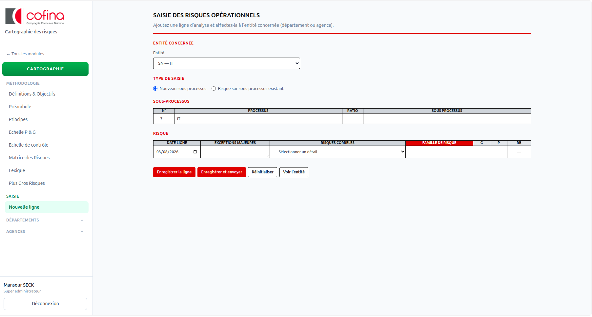
Figure 7 — Saisie d’une ligne de risque
5.5 Validation
Circuit : Agent → Soumettre → Responsable contrôle → Valider → Responsable entité (phase 2) → Finaliser
En cas de correction : le responsable contrôle peut Renvoyer → l’agent corrige → Soumettre à nouveau.
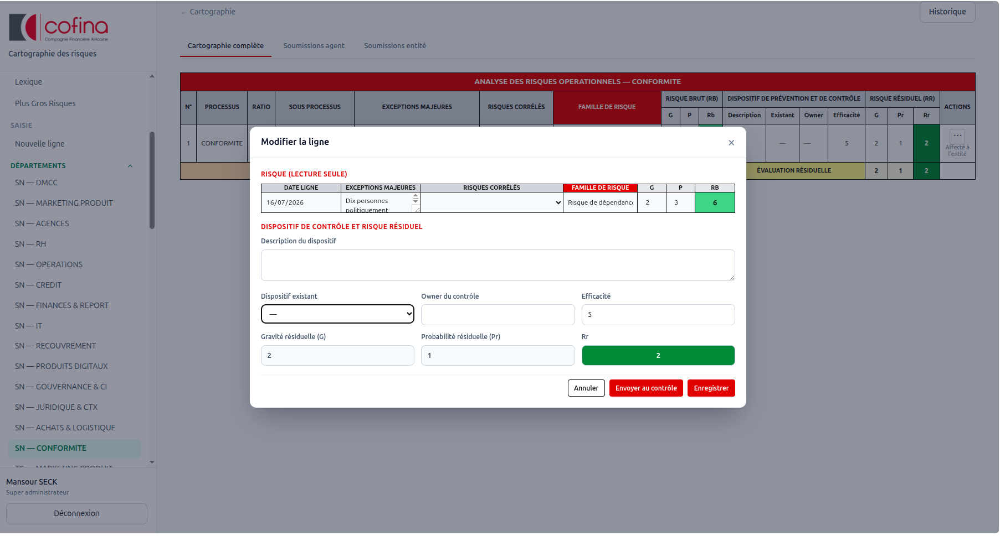
Figure 8 — Analyse d’entité et soumissions
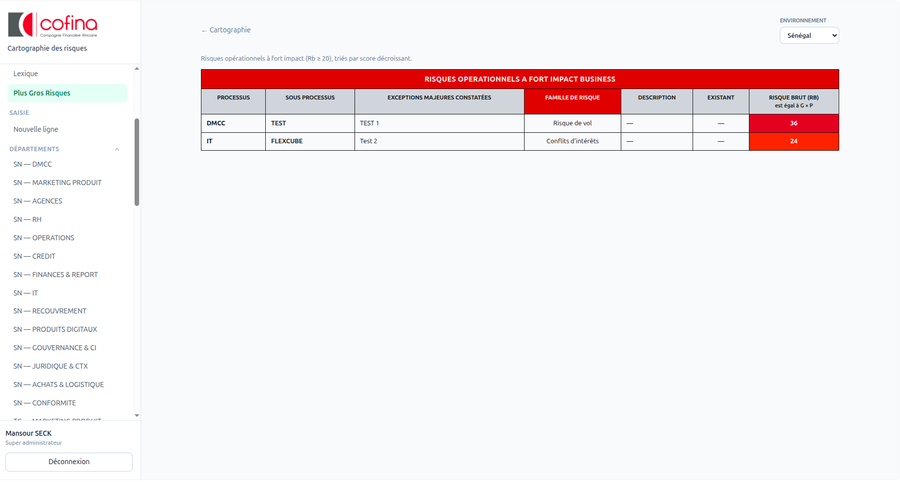
Figure 9 — Plus Gros Risques (Rb ≥ 20)
6. Module Suivi des reco
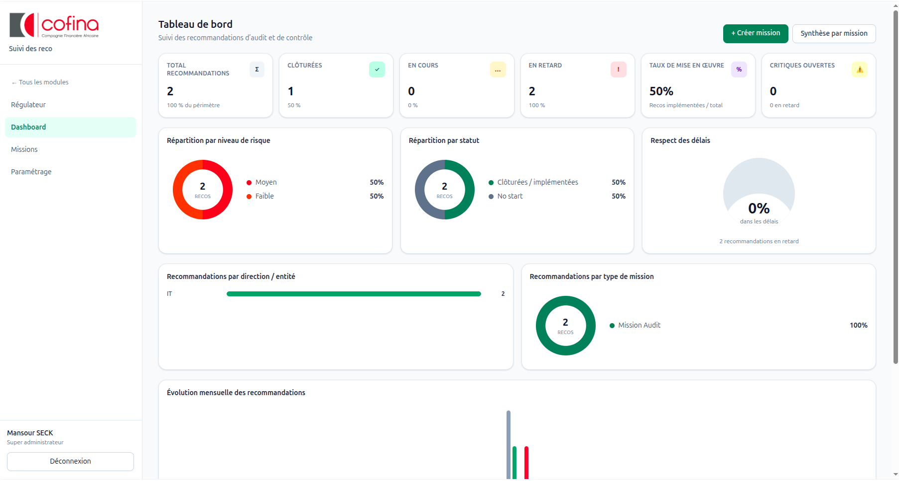
Figure 10 — Menu Suivi des reco
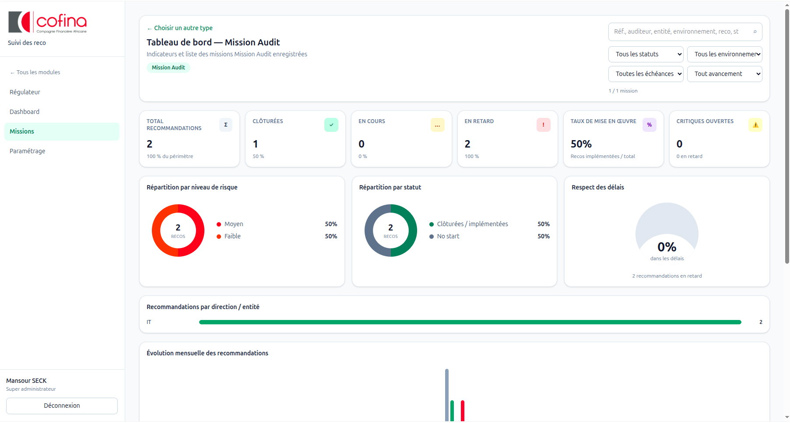
Figure 11 — Tableau de bord KPI
6.3 Créer une mission
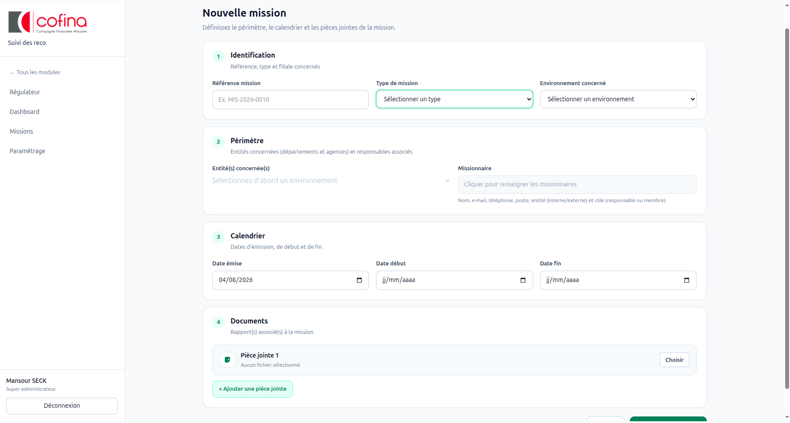
Figure 12 — Formulaire Nouvelle mission
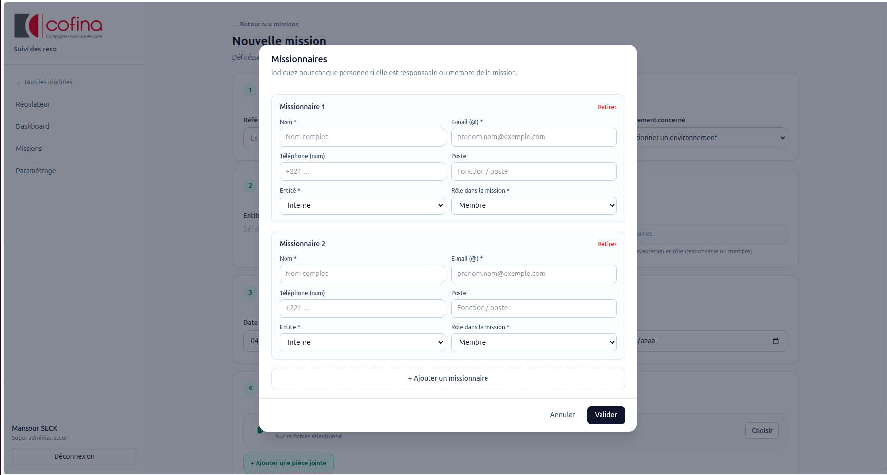
Figure 13 — Missionnaires : rôle Responsable ou Membre
Le champ Rôle dans la mission indique si la personne est Responsable ou Membre — ce n’est pas le nom d’une équipe à saisir librement.
6.4 Recommandations
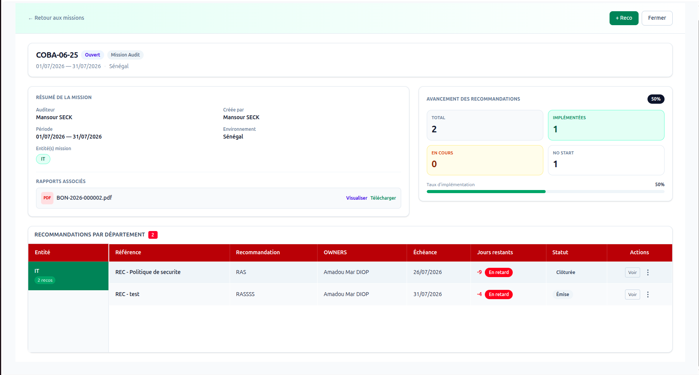
Figure 14 — Détail mission
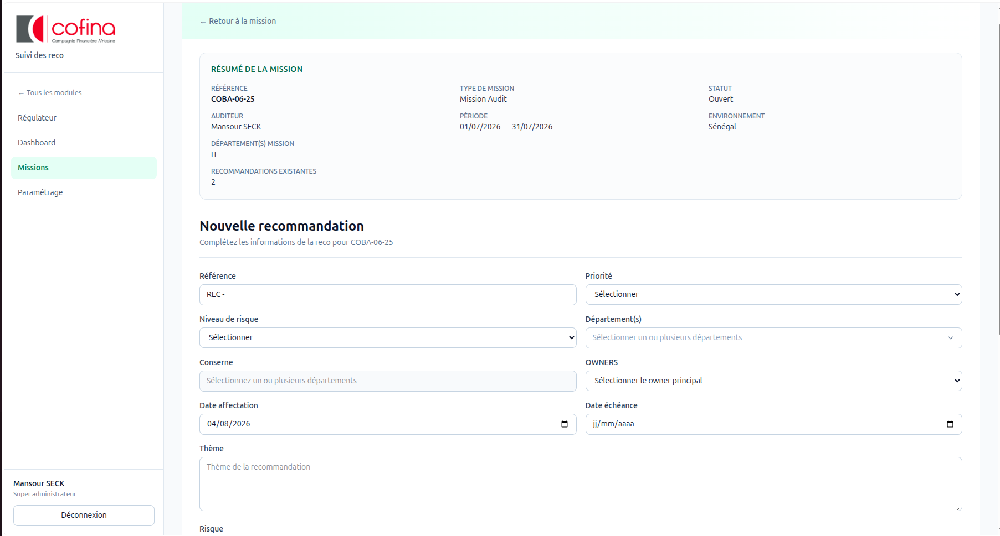
Figure 15 — Nouvelle recommandation
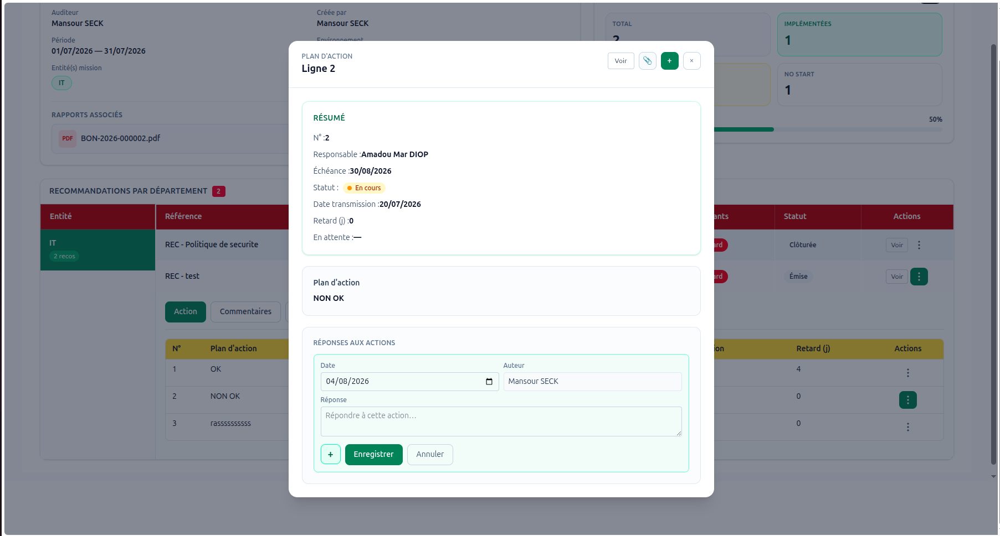
Figure 16 — Réponse métier / plan d’action
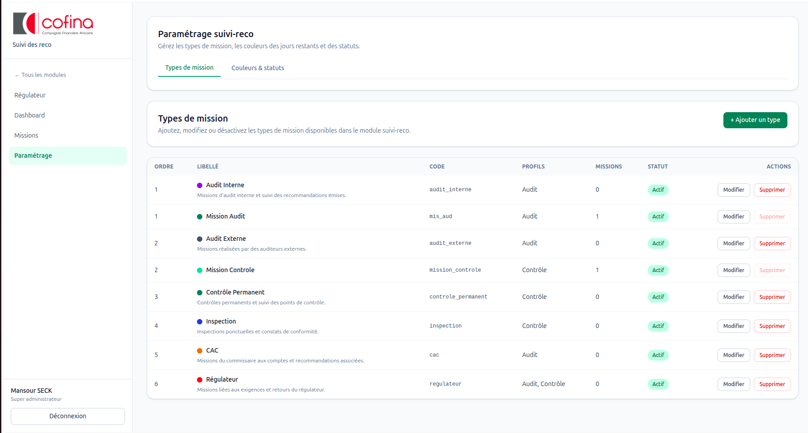
Figure 18 — Paramétrage
7. Workflows détaillés (pas à pas)
Cette section décrit qui fait quoi , dans quel ordre , et quel statut apparaît à l’écran.
7.1 Cartographie des risques
Circuit : Agent → Soumettre → Responsable contrôle → Valider → Responsable entité (phase 2) → Finaliser
Objectif : passer d’une saisie contrôle (phase 1) à un risque Complété avec dispositifs et risque résiduel (phase 2 métier).
Acteur Rôle
Agent contrôle Crée / corrige la phase 1, soumet Responsable contrôle Valide ou renvoie phase 1 et phase 2 Responsable entité Complète la phase 2 et soumet
Statut affiché Qui agit ensuite
Brouillon Agent En attente de validation Responsable contrôle Modifications demandées Agent Affecté à l’entité Responsable entité Soumis par l’entité Responsable contrôle Complété Terminé
Étape A (Agent) : Saisie → Enregistrer (Brouillon) → Soumettre.Étape B (Resp. contrôle) : Valider (= Affecté à l’entité) ou Renvoyer (= Modifications demandées).Étape C (Resp. entité) : Dispositifs / efficacité / Rr → Soumettre.Étape D (Resp. contrôle) : Valider → Complété, ou renvoyer à l’entité.
7.2 Suivi des recommandations
Circuit : Créer mission → Ajouter recommandation(s) → Métier répond (Action / Affecter) → Audit/Contrôle suit → (optionnel) Transmettre au Régulateur → Clôture
Étape Acteur Actions clés
1. Mission Audit / Contrôle + Créer mission, entités, missionnaires, dates 2. Reco Audit / Contrôle + Reco, owners, priorité, risque, échéance 3. Affecter Responsable entité Self ou membre d’équipe 4. Plan d’action Owner / Agent Lignes d’actions, PJ, commentaires 5. Validation Resp. entité (si agent) À valider → Transmis 6. Régulateur Audit / Contrôle Bouton Transmettre
Sans l’onglet Affecter (moi-même ou membre), le plan d’action n’est en général pas accessible.passivité (motif + pièces) si aucune action n’est engagée.
Statut réponse Signification
En saisie Plan en rédaction À valider Agent a soumis ; responsable doit valider Transmis Réponse envoyée à l’audit / contrôle
7.3 Régulateur
Audit / Contrôle clique Transmettre .
La reco apparaît dans le menu Régulateur .
Le régulateur consulte / commente selon ses droits.
Sans Transmettre , le régulateur ne voit pas la recommandation.
7.4 Mémo « Qui fait quoi »
Si je suis… Mon parcours type
Agent contrôle Saisie → Brouillon → Soumettre → corriger si Modifications demandées Responsable contrôle Soumissions agent → Valider/Renvoyer → Soumissions entité → Compléter Responsable entité (carto) Affecté à l’entité → Phase 2 → Soumettre Audit / Contrôle (reco) Mission → + Reco → suivre plans → Transmettre régulateur Responsable entité (reco) Affecter → Plan d’action → Transmettre à l’audit Agent métier Remplir le plan affecté → soumettre au responsable Régulateur Menu Régulateur → dossiers transmis
8. Glossaire
Terme Signification
G / P Gravité / Probabilité Rb / Rr Risque brut / résiduel Phase 1 / 2 Risque inhérent (contrôle) / dispositifs & résiduel (entité) Fort impact Rb ≥ 20 (seuil usuel)